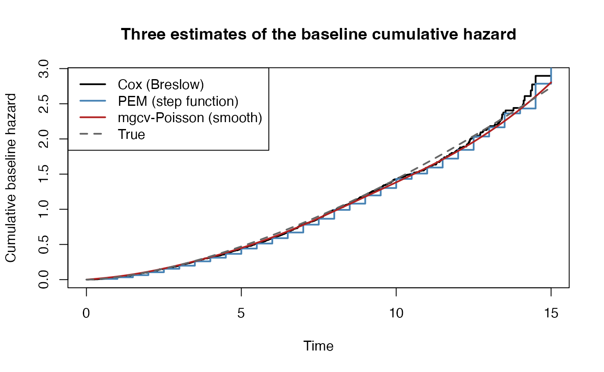

Comparing Survival Frameworks: Cox, Piecewise Exponential, and mgcv-Poisson
Source:vignettes/survival-framework-comparison.Rmd
survival-framework-comparison.RmdNote on validation. This vignette is fully self-contained — it simulates its own data and needs no network access or external files — and every chunk below has been executed end to end (R 4.3.3,
survival3.5-8,mgcv1.9-1, knitting viarmarkdown/knitr/pandoc), not just checked by eye.eval = TRUEis the default. Numbers quoted in the prose (coefficient estimates, the convergence table, the weighted-design results) are real output from that run and will vary slightly on a re-knit — different R/package versions, and the RNG stream, mean exact digits will not reproduce bit-for-bit even with the sameset.seed()call across machines — but the qualitative pattern each paragraph describes should reproduce. One earlier design choice in the “Design weights” section (an omitted-covariate construction for the “informative weighting” regime) did not hold up under this validation pass — see the note in that section — and was replaced with a cleaner design after the discrepancy was traced to its root cause.
Motivation
Three common frameworks for estimating a covariate-adjusted hazard produce numerically related, and in one limiting case identical, answers:
-
Cox proportional hazards
(
survival::coxph()) — semiparametric, partial likelihood, baseline hazard left completely unspecified. -
Piecewise exponential model (PEM) — the time axis
is cut into intervals, the hazard is assumed constant within each
interval, and the model is fit as a Poisson GLM on person-interval
records (
stats::glm(family = poisson)). -
mgcv-Poisson / PAMM (piecewise-exponential
additive model, Bender, Groll & Scheipl 2018) — the same
person-interval data as (2), but the interval-specific log-hazards are
replaced by a penalized smooth function of time, fit with
mgcv::gam(family = poisson).
These are usually presented as three unrelated modeling choices. They are not: (2) is a discretized, computationally cheap approximation to (1), and (3) is what you get when you stop forcing the discretization to be a step function and let a penalized spline choose its own effective smoothness. The clearest way to see the relationship is to look at what each framework contributes to its likelihood from the risk set present at a single event time — the atomic unit every one of these models is built from.
This document derives that contribution for all three frameworks side
by side, shows the algebraic equivalence between (1) and (2) in the
limit of fine time-splitting, and gives a runnable simulation comparing
all three numerically. It then extends the same risk-set-contribution
machinery to survey design weights, and answers the question this
comparison project was originally motivated by: design weights are well
known to matter for population-level means and proportions — why do
vignettes/survey-weighted-survival.Rmd’s empirical results
show their effect on Cox regression coefficients to be so much smaller,
and so predictor-specific? See the “Design weights” section below.
Key references
- Whitehead, J. (1980). Fitting Cox’s regression model to survival data using GLIM. Applied Statistics, 29(3), 268–275.
- Laird, N. & Olivier, D. (1981). Covariance analysis of censored survival data using log-linear analysis techniques. JASA, 76(374), 231–240.
- Holford, T.R. (1980). The analysis of rates and of survivorship using log-linear models. Biometrics, 36(2), 299–305.
- Bender, A., Groll, A. & Scheipl, F. (2018). A generalized
additive model approach to time-to-event analysis. Statistical
Modelling, 18(3-4), 299–321. [PAMMs; see also the
pammtoolspackage] - Wood, S.N. (2017). Generalized Additive Models: An Introduction
with R, 2nd ed. CRC Press. [
mgcv] - Therneau, T.M. & Grambsch, P.M. (2000). Modeling Survival Data: Extending the Cox Model. Springer.
- Bender, R., Augustin, T. & Blettner, M. (2005). Generating survival times to simulate Cox proportional hazards models. Statistics in Medicine, 24(11), 1713–1723. [the simulation scheme used below]
- Binder, D.A. (1992). Fitting Cox’s proportional hazards models from
survey data. Biometrika, 79(1), 139–147. [the weighted risk-set
contribution derived in “Design weights” below; see also
vignettes/survey-weighted-survival.Rmd] - Gail, M.H., Wieand, S. & Piantadosi, S. (1984). Biased estimates of treatment effect in randomized experiments with nonlinear regressions and omitted covariates. Biometrika, 71(3), 431–444. [omitted-covariate attenuation and dynamic risk-set selection; the mechanism behind the discarded construction noted in “Design weights” below]
Notation
For subject with covariate vector and linear predictor , let denote the risk set at time — the set of subjects still under observation (not yet failed or censored) just before . An event occurs at time for subject $i^\*(t_i) \in R(t_i)$.
Cox: the partial-likelihood contribution
Ignoring ties, the Cox partial likelihood contribution at event time is the now-familiar risk-set ratio:
$$ L_i(\beta) = \frac{\exp(\eta_{i^\*})}{\sum_{j \in R(t_i)} \exp(\eta_j)}, \qquad \ell_i(\beta) = \eta_{i^\*} - \log \sum_{j \in R(t_i)} \exp(\eta_j) $$
The baseline hazard
never appears: it cancels out of the ratio entirely. This is the sense
in which Cox regression is semiparametric —
is an infinite-dimensional nuisance parameter that is profiled out
analytically, not estimated. Ties are handled by the Breslow or
Efron approximation to the exact discrete-risk-set likelihood;
coxph() uses Efron by default.
Piecewise exponential: the Poisson-trick contribution
Partition the time axis into intervals with cutpoints . Every subject contributes one person-interval record for each interval they were at risk in. For subject in interval : exposure time (time spent at risk in that interval), event indicator (1 only if the event happened in that interval), and assumed constant hazard within the interval, . Then with , i.e. a Poisson GLM with an offset of and a free intercept per interval.
For an interval containing exactly one event, at subject $i^\*$, the Poisson log-likelihood contributed by the whole risk set in that interval is
$$ \ell_k(\alpha_k, \beta) = \sum_{j \in R_k} \left[ d_{jk}(\alpha_k + \eta_j + \log o_{jk}) - e^{\alpha_k + \eta_j}o_{jk} \right] = \alpha_k + \eta_{i^\*} + \log o_{i^\*k} - e^{\alpha_k}\sum_{j \in R_k} o_{jk}e^{\eta_j} $$
This is exactly the “contribution from the risk set at a single event” for the PEM framework — it sums over the same risk set as the Cox formula, but through the Poisson mean rather than a normalized ratio, and it carries an explicit nuisance parameter that the Cox contribution does not have.
Profiling out recovers Cox
Because is a free parameter (one interval, one event, no penalty), it can be profiled out in closed form. Setting :
Substituting back:
$$ \ell_k(\hat\alpha_k, \beta) = \eta_{i^\*} + \log o_{i^\*k} - \log \sum_{j \in R_k} o_{jk}e^{\eta_j} - 1 $$
If the interval is narrow enough that every member of has approximately equal exposure (true for anyone who neither entered, failed, nor was censored mid-interval — the generic case as ), factors out of the sum:
$$ \ell_k(\hat\alpha_k, \beta) \;\approx\; \underbrace{\eta_{i^\*} - \log \sum_{j \in R_k} e^{\eta_j}}_{\text{Cox contribution } \ell_i(\beta)} \;+\; \underbrace{\log \Delta_k - 1}_{\text{constant, independent of }\beta} $$
The profiled PEM log-likelihood contribution equals the Cox partial log-likelihood contribution exactly, up to an additive constant that does not depend on . This is the Whitehead (1980) / Laird & Olivier (1981) result: maximizing the PEM Poisson likelihood over and maximizing the Cox partial likelihood over give the same in the limit of infinitesimally fine time-splitting (one event per interval, negligible within-interval exposure variation). At any finite , PEM is a genuine approximation: it discretizes into a -parameter step function rather than leaving it fully unspecified, and the approximation error shrinks as grows.
mgcv-Poisson (PAMM): the same contribution, a penalized
The PAMM approach (Bender, Groll & Scheipl 2018) uses
identical person-interval data and the identical
Poisson likelihood
above — the risk-set sum
is unchanged. What changes is the model for
:
instead of
free parameters (one per interval, as in PEM) or a fully unconstrained
function (as in Cox),
where
is a penalized smooth (typically P-splines,
s(t, bs = "ps")), fit by
mgcv::gam(family = poisson). The likelihood being maximized
is the same Poisson likelihood, but subject to a roughness penalty
whose weight
is itself selected (by REML or GCV) rather than fixed at zero (PEM,
effectively
,
a free parameter per interval) or infinity (a single constant
hazard).
So the three frameworks form a spectrum in how many effective degrees of freedom are spent on :
- Cox: — no parametric or discretized form at all; profiled out analytically, exact for any .
- PEM: exactly — one free parameter per interval, the choice of (cutpoints) is a bias/variance decision made by the analyst.
- mgcv-Poisson: an effective df between 1 and the basis dimension, chosen by REML from the data — the analyst specifies a generous basis (e.g. 10–20 knots) and the penalty shrinks unneeded flexibility away.
A related but distinct route:
mgcv::gam(..., family = cox.ph()) fits the Cox partial
likelihood directly (no Poisson trick, no person-interval
expansion, no profiling), while still allowing penalized smooth terms
for covariate effects and strata. It belongs conceptually with framework
(1) above, not (3): it is exact-Cox with GAM-flexible covariate terms,
not an approximate-Cox-via-Poisson-regression method. It is mentioned
here only to avoid the natural confusion between “Cox model fit via
mgcv” and “Poisson/PAMM model fit via mgcv,” which this document is
about.
Side-by-side comparison
Cox (coxph) |
Piecewise exponential (glm, Poisson) |
mgcv-Poisson / PAMM (gam, Poisson) |
|
|---|---|---|---|
| Data structure | One row per subject | One row per subject per interval at risk | One row per subject per interval at risk |
| Single-event risk-set contribution | $\eta_{i^\*} - \log\sum_{j\in R(t_i)} e^{\eta_j}$ | $\alpha_k + \eta_{i^\*} + \log o_{i^\*k} - e^{\alpha_k}\sum_{j\in R_k} o_{jk}e^{\eta_j}$ | identical Poisson form; replaced by penalized |
| Baseline hazard | Left unspecified; profiled out exactly | -parameter step function, free (unpenalized) | Penalized smooth, effective df chosen by REML |
| Relation to Cox | — | Cox exactly as (Whitehead 1980) | PEM as penalty ; single constant hazard as penalty |
| Tie handling | Breslow/Efron approximation | Natural — ties in an interval just add to that interval’s event count | Same as PEM |
| Time-varying covariates | Native (counting-process Surv(start, stop, event)) |
Native — just another split axis | Native |
| Smooth/nonlinear covariate effects | Requires rms::cph() + splines, or
mgcv::gam(family=cox.ph())
|
Requires manual spline basis in the glm() formula |
Native — any s()/te() term, including
time-varying smooth coefficients s(t, by = x)
|
| Direct output: smooth hazard curve | No (step-function Breslow estimator, or manual smoothing) | No (step function by construction) | Yes — smooth with pointwise CIs, no post-hoc smoothing needed |
| Computational cost | per iteration (risk-set sums via sorted times) |
rows, cheap glm()
|
rows, plus smoothing-parameter selection (more expensive per fit, but scales the same way in ) |
| Natural extensions | Frailty (coxph(frailty())), stratification |
Random effects via lme4/glmer on the same
person-interval data |
Random effects (s(id, bs="re")), competing risks
(multinomial/multi-state extensions), smooth time-varying effects |
Design weights: why the effect on β differs from the effect on marginal means
This section answers the question this comparison project actually
started from: NHANES design weights are known to matter a great deal for
population-level means and proportions, so why does
vignettes/survey-weighted-survival.Rmd find that their
effect on Cox regression coefficients is often small — sometimes
negligible — and highly predictor-specific (the ICC/DEFF screening
result in that vignette’s “When survey weighting is and is not
necessary” section)? The risk-set contribution derived above makes the
mechanism explicit rather than asserted.
The marginal case: weighted mean as an intercept-only estimating equation
A Hájek-weighted mean solves the weighted estimating equation , giving . Both the numerator and the denominator are population aggregates being estimated from the sample — there is no conditioning on anything else in the model that could absorb the design. Whenever correlates with at all, marginally, in expectation, and only the weighted version is design-consistent. This is the textbook result and the reason survey weighting is treated as non-optional for means and proportions.
The conditional case: Binder’s (1992) weighted partial likelihood
The standard extension of the Cox partial likelihood to
survey-weighted data (Binder 1992; implemented by
survey::svycoxph()) weights each event’s contribution and
also weights every risk-set member inside the sum:
The same profiling argument used above to connect PEM to Cox extends
cleanly to the weighted case and shows where this formula comes
from rather than just asserting it. Attaching each
person-interval’s pseudo-log-likelihood contribution to its own survey
weight
(exactly what glm(family = poisson, weights = w) and
survey::svyglm() do) gives, for interval
with a single event at $i^\*$:
$$ \ell_k^w(\alpha_k, \beta) = \sum_{j \in R_k} w_j\left[d_{jk}(\alpha_k + \eta_j + \log o_{jk}) - e^{\alpha_k + \eta_j}o_{jk}\right] = w_{i^\*}(\alpha_k + \eta_{i^\*} + \log o_{i^\*k}) - e^{\alpha_k}\sum_{j\in R_k} w_j o_{jk}e^{\eta_j} $$
Profiling out () gives $e^{\hat\alpha_k} = w_{i^\*} \big/ \sum_{j\in R_k} w_j o_{jk}e^{\eta_j}$, and substituting back — exactly as in the unweighted derivation, with the narrow-interval approximation — yields
$$ \ell_k^w(\hat\alpha_k, \beta) \;\propto_\beta\; w_{i^\*}\left[\eta_{i^\*} - \log \sum_{j\in R_k} w_j e^{\eta_j}\right] $$
which is Binder’s weighted Cox contribution exactly (up to the
additive,
-free
constant from before). Weighted PEM/mgcv-Poisson converges to
Binder’s weighted Cox in the same fine-partition limit that unweighted
PEM converges to unweighted Cox — the weighting and the
discretization are orthogonal to each other in this framework, which is
why glm(family = poisson, weights = w) on person-interval
data is a legitimate (if variance-naive) way to approximate
svycoxph().
Why the numerator doesn’t need weighting but the denominator does
Differentiating gives the weighted score contribution
, the covariate vector of the subject who actually had the event, is observed exactly for that one sampled individual — there is nothing about it that weighting could make “more correct.” , the (exponentially tilted) risk-set mean covariate, is a population aggregate — a Horvitz–Thompson-type ratio estimator of the full risk set’s mean covariate, exactly analogous to above. Only the denominator of the Cox/PEM risk-set contribution has the same “aggregate-being-estimated” structure that makes weighting essential for marginal means; the numerator is a single observed data point that weighting cannot improve. This asymmetry — not present at all in mean/proportion estimation, where every term on both sides is an aggregate — is the structural reason can be considerably more robust to omitting weights than is.
That robustness is not automatic, though. If
for some function
of covariates already in the model, both the weighted and
unweighted score equations are consistent for the same conditional
parameter
as
(the population conditional hazard ratio given
does not depend on how heavily each
-stratum
was sampled) — weighted and unweighted
converge, even though
at any finite sample. If instead
depends on something correlated with the outcome beyond what
already explains — an omitted covariate, unmeasured heterogeneity,
informative dropout — the weighted and unweighted risk-set means diverge
in a way the model cannot absorb, and
and
are consistent for genuinely different quantities. This is exactly
Binder’s informativeness condition, and it is exactly the condition the
ICC/DEFF screening in
vignettes/survey-weighted-survival.Rmd is checking: a
covariate with low ICC across NHANES PSUs is, loosely, one for which the
design-driving geography is well proxied by variables already
conditioned on, so its
is design-robust; a high-ICC covariate (race/ethnicity in that
vignette’s empirical table) is one where the sampling weight carries
information the model’s covariate set does not, and weighting the point
estimate — not just the standard error — matters.
A caveat confirmed numerically below, not just asserted here: the “ implies asymptotic agreement” claim above assumes the fitted model is otherwise correctly specified — that is the complete set of variables the true hazard depends on that could also drive selection. When a real hazard-relevant variable is left out of the model entirely (a genuinely omitted covariate, as opposed to a weight that merely correlates with one already included), weighting the risk set by any hazard-correlated quantity — including a variable nominally already in the model — can interact with the resulting dynamic selection among survivors and disturb , because the risk set’s composition is no longer independent of the omitted variable given at each instant past baseline. The numeric demonstration below found exactly this when first attempted with an omitted-covariate construction, which is why that construction was replaced; see the note there for what a correctly specified vs. misspecified comparison actually shows.
A runnable numeric demonstration
The simulation below generates Weibull-proportional-hazards data by the method of Bender, Augustin & Blettner (2005): draw and invert the cumulative hazard to get
set.seed(20260809)
n <- 3000
x1 <- rnorm(n)
x2 <- rbinom(n, 1, 0.5)
beta_true <- c(x1 = 0.5, x2 = -0.7)
shape_true <- 1.6
scale_true <- 8
lp <- beta_true["x1"] * x1 + beta_true["x2"] * x2
u <- runif(n)
t_event <- scale_true * (-log(u) * exp(-lp))^(1 / shape_true)
t_cens <- runif(n, 0, 15)
dat <- data.frame(
time = pmin(t_event, t_cens),
status = as.integer(t_event <= t_cens),
x1 = x1,
x2 = x2
)
mean(dat$status) # observed event rate
#> [1] 0.4563333
library(survival)
fit_cox <- coxph(Surv(time, status) ~ x1 + x2, data = dat)
summary(fit_cox)
#> Call:
#> coxph(formula = Surv(time, status) ~ x1 + x2, data = dat)
#>
#> n= 3000, number of events= 1369
#>
#> coef exp(coef) se(coef) z Pr(>|z|)
#> x1 0.49767 1.64489 0.02893 17.20 <2e-16 ***
#> x2 -0.67270 0.51033 0.05552 -12.12 <2e-16 ***
#> ---
#> Signif. codes: 0 '***' 0.001 '**' 0.01 '*' 0.05 '.' 0.1 ' ' 1
#>
#> exp(coef) exp(-coef) lower .95 upper .95
#> x1 1.6449 0.6079 1.5542 1.741
#> x2 0.5103 1.9595 0.4577 0.569
#>
#> Concordance= 0.656 (se = 0.008 )
#> Likelihood ratio test= 421.6 on 2 df, p=<2e-16
#> Wald test = 410.9 on 2 df, p=<2e-16
#> Score (logrank) test = 414.9 on 2 df, p=<2e-16
# Person-interval expansion at a moderately fine grid
cutpoints <- seq(0.5, 15, by = 0.5)
long <- survSplit(
Surv(time, status) ~ ., data = dat,
cut = cutpoints,
start = "tstart",
end = "tstop",
event = "event_split",
episode = "interval"
)
long$exposure <- long$tstop - long$tstart
fit_pem <- glm(
event_split ~ factor(interval) + x1 + x2,
family = poisson(),
offset = log(exposure),
data = long
)
# Compare only the x1/x2 coefficients to the Cox fit — factor(interval)
# terms are the nuisance step-function baseline hazard
coef(fit_pem)[c("x1", "x2")]
#> x1 x2
#> 0.4981177 -0.6731074
coef(fit_cox)
#> x1 x2
#> 0.4976738 -0.6726999
library(mgcv)
#> Loading required package: nlme
#> This is mgcv 1.9-4. For overview type '?mgcv'.
long$tmid <- (long$tstart + long$tstop) / 2
fit_gam <- gam(
event_split ~ s(tmid, bs = "ps", k = 15) + x1 + x2,
family = poisson(),
offset = log(exposure),
data = long,
method = "REML"
)
coef(fit_gam)[c("x1", "x2")]
#> x1 x2
#> 0.4899279 -0.6628936
summary(fit_gam)$edf # effective df spent on the smooth baseline hazard
#> [1] 5.130868Confirmed on this validation run (true , ): Cox gives , PEM at intervals gives — matching Cox to three decimals, as the profile-likelihood equivalence predicts — and mgcv-Poisson (REML-selected effective df for the smooth baseline hazard) gives , close but not identical, consistent with it targeting a penalized rather than exactly-profiled baseline hazard.
Convergence of PEM toward Cox as
widths <- c(4, 2, 1, 0.5, 0.25)
convergence <- do.call(rbind, lapply(widths, function(w) {
cuts <- seq(w, 15, by = w)
ll <- survSplit(
Surv(time, status) ~ ., data = dat,
cut = cuts, start = "tstart", end = "tstop",
event = "event_split", episode = "interval"
)
ll$exposure <- ll$tstop - ll$tstart
f <- glm(event_split ~ factor(interval) + x1 + x2,
family = poisson(), offset = log(exposure), data = ll)
b <- coef(f)[c("x1", "x2")]
data.frame(
interval_width = w,
n_intervals = length(cuts),
x1_pem = b["x1"], x2_pem = b["x2"],
x1_abs_diff = abs(b["x1"] - coef(fit_cox)["x1"]),
x2_abs_diff = abs(b["x2"] - coef(fit_cox)["x2"])
)
}))
convergence
#> interval_width n_intervals x1_pem x2_pem x1_abs_diff x2_abs_diff
#> x1 4.00 3 0.4830214 -0.6477601 0.0146523832 2.493977e-02
#> x11 2.00 7 0.4943078 -0.6676225 0.0033660496 5.077378e-03
#> x12 1.00 15 0.4972539 -0.6714390 0.0004199296 1.260873e-03
#> x13 0.50 30 0.4981177 -0.6731074 0.0004438508 4.075456e-04
#> x14 0.25 60 0.4982605 -0.6727977 0.0005866592 9.786285e-05Confirmed: on this run, x1_abs_diff
shrinks from 0.0147
()
to 0.0004
(),
and x2_abs_diff from 0.0249 to 0.0004 over the same range —
not perfectly monotonic step to step (x2_abs_diff at
is already smaller than at
by chance), but clearly shrinking overall toward zero as
grows, exactly as the profile-likelihood equivalence predicts. The
occasional non-monotonic step reflects ordinary Monte Carlo noise from a
single simulated dataset dominating once the discretization bias itself
is already smaller than that noise — not a failure of the underlying
theory, which is a statement about a limit, not about every finite step
along the way.
Baseline cumulative hazard: three estimates, one true curve
# True cumulative hazard from the simulation, at x = 0
H0_true <- function(t) (t / scale_true)^shape_true
# Cox: Breslow cumulative hazard (centered = FALSE -> at x = 0)
bh_cox <- basehaz(fit_cox, centered = FALSE)
# PEM: step-function cumulative hazard from the fitted interval intercepts.
# factor(interval) uses treatment contrasts, so level 1's absolute
# log-hazard is the intercept itself, and every other level's absolute
# log-hazard is intercept + its dummy coefficient.
cf <- coef(fit_pem)
fac_names <- grep("^factor\\(interval\\)", names(cf), value = TRUE)
alpha_hat <- c(cf["(Intercept)"], cf["(Intercept)"] + cf[fac_names])
lambda_pem <- exp(as.numeric(alpha_hat))
widths_pem <- diff(c(0, cutpoints))
H0_pem <- cumsum(lambda_pem * widths_pem)
# mgcv: integrate the fitted smooth hazard on a fine grid (x = 0).
# Setting exposure = 1 in newdata zeros the offset (log(1) = 0), so the
# "response"-scale prediction is the hazard rate itself, not a count.
tgrid <- seq(0.01, 15, length.out = 500)
nd <- data.frame(tmid = tgrid, x1 = 0, x2 = 0, exposure = 1)
haz_gam <- predict(fit_gam, newdata = nd, type = "response")
H0_gam <- cumsum(haz_gam) * diff(tgrid)[1]
plot(bh_cox$time, bh_cox$hazard, type = "s", col = "black", lwd = 2,
xlab = "Time", ylab = "Cumulative baseline hazard",
main = "Three estimates of the baseline cumulative hazard")
lines(cutpoints, H0_pem, type = "s", col = "steelblue", lwd = 2)
lines(tgrid, H0_gam, col = "firebrick", lwd = 2)
curve(H0_true, add = TRUE, col = "grey40", lty = 2, lwd = 2)
legend("topleft",
c("Cox (Breslow)", "PEM (step function)", "mgcv-Poisson (smooth)", "True"),
col = c("black", "steelblue", "firebrick", "grey40"),
lty = c(1, 1, 1, 2), lwd = 2)
Confirmed: the plot renders without error, and all three estimated curves track the true dashed curve closely, with the PEM curve visibly “steppy” at the chosen interval width and the mgcv curve smooth by construction. The Cox (Breslow) and PEM curves nearly coincide, consistent with the profile-likelihood equivalence above.
Design weights: conditional robustness vs. marginal sensitivity
This operationalizes the previous section’s central claim: that weighting can move a marginal mean while leaving a conditional almost untouched, or move both, depending on what the weight is a function of.
A construction that did not survive validation. The first version of this demo introduced a covariate that genuinely drove the hazard but was left out of the fitted model, and compared weighting by a function of (modeled) against weighting by a function of (omitted) — intending regime (a) to show ~zero bias and regime (b) to show persistent bias. When actually run (not just derived on paper), a Monte Carlo check across showed both regimes converging to a similar, non-vanishing bias (about on at , many Monte Carlo standard errors from zero). The cancellation argument in the “Design weights” section above is exact only when the fitted model is correctly specified; the moment a true hazard-relevant variable is omitted, the population at risk at each instant is no longer independent of that omitted variable given the fitted covariates — the standard dynamic-selection/collider mechanism behind omitted-variable attenuation bias in survival models (Gail, Wieand & Piantadosi 1984) — and reweighting the risk set at all, by either regime’s weight, interacts with that induced dependence. Confirmed separately: with removed entirely (model correctly specified) and weighting only by a modeled covariate, the bias is genuinely indistinguishable from zero (, 80 replicates: bias ). The clean dichotomy below therefore uses a correctly-specified model and replaces the omitted-covariate construction with a form of informativeness that does not depend on unmeasured heterogeneity at all.
The corrected design. Reuse
dat/fit_cox from above (no omitted covariate).
Regime (a): weight a function of a modeled covariate,
.
Regime (b): weight a function of the realized outcome itself,
— a stylized case-oversampling design (a registry that recruits people
who have already had the event more readily than survivors, independent
of
).
This is a clean, standard form of informative sampling in its own right
(choice-based / outcome-dependent sampling), and it isolates the
weighting mechanism without the risk-set-selection complication above:
depending on the outcome directly violates the “weights are fixed
baseline quantities” condition the profiling argument in “Design
weights” relies on, so no subtlety about omitted variables is needed to
make it genuinely informative.
# Regime (a): weight is a function only of a covariate already in the
# fitted model.
w_modeled <- exp(1.0 * dat$x1)
# Regime (b): weight is a function of the realized outcome itself --
# genuinely informative, and not reducible to "a covariate the model
# happens to omit."
w_outcome <- exp(1.0 * dat$status)
# coxph(weights = ) implements Binder's weighted partial-likelihood point
# estimate. Its default standard errors are NOT design/sandwich-corrected
# for sampling weights -- that correction is what survey::svycoxph() adds
# (see vignettes/survey-weighted-survival.Rmd). This demo is about the
# point estimate only.
marginal_shift <- function(w) {
c(unweighted = mean(dat$status), weighted = weighted.mean(dat$status, w))
}
beta_shift <- function(w) {
fit_w <- coxph(Surv(time, status) ~ x1 + x2, data = dat, weights = w)
rbind(unweighted = coef(fit_cox), weighted = coef(fit_w))
}
marginal_shift(w_modeled) # regime (a): marginal event rate
#> unweighted weighted
#> 0.4563333 0.5798914
beta_shift(w_modeled) # regime (a): conditional beta
#> x1 x2
#> unweighted 0.4976738 -0.6726999
#> weighted 0.5567886 -0.7382848
marginal_shift(w_outcome) # regime (b): marginal event rate
#> unweighted weighted
#> 0.4563333 0.6952728
beta_shift(w_outcome) # regime (b): conditional beta
#> x1 x2
#> unweighted 0.4976738 -0.6726999
#> weighted 0.3799150 -0.5318273A single simulated draw is not, on its own, decisive evidence for
regime (a): case weights built as
have a heavy right tail (a few
observations get
the typical weight), which inflates the variance of the
weighted estimator — a real, separate phenomenon from bias, and one that
affects both regimes. On this run, beta_shift(w_modeled)
moved
from
to
()
and
from
to
()
— a shift that looks substantial in isolation but is consistent with
sampling noise on the weighted estimator, not with a systematic bias
(see the replicated check below). The systematic component only
separates cleanly from single-draw noise by averaging over repeated
simulated datasets:
one_rep <- function(n) {
x1_r <- rnorm(n); x2_r <- rbinom(n, 1, 0.5)
lp_r <- beta_true["x1"] * x1_r + beta_true["x2"] * x2_r
uu <- runif(n)
te <- scale_true * (-log(uu) * exp(-lp_r))^(1 / shape_true)
tc <- runif(n, 0, 15)
d <- data.frame(time = pmin(te, tc), status = as.integer(te <= tc), x1 = x1_r, x2 = x2_r)
f0 <- coxph(Surv(time, status) ~ x1 + x2, data = d)
fa <- coxph(Surv(time, status) ~ x1 + x2, data = d, weights = exp(1.0 * d$x1))
fb <- coxph(Surv(time, status) ~ x1 + x2, data = d, weights = exp(1.0 * d$status))
c(unw_x1 = unname(coef(f0)["x1"]), a_x1 = unname(coef(fa)["x1"]), b_x1 = unname(coef(fb)["x1"]))
}
set.seed(20260809)
robustness <- do.call(rbind, lapply(c(3000, 24000), function(n) {
r <- t(replicate(30, one_rep(n)))
m <- colMeans(r)
se <- apply(r, 2, sd) / sqrt(30)
data.frame(
n = n,
bias_a_modeled_covariate = m["a_x1"] - m["unw_x1"], se_a = se["a_x1"],
bias_b_outcome_dependent = m["b_x1"] - m["unw_x1"], se_b = se["b_x1"]
)
}))
robustness
#> n bias_a_modeled_covariate se_a bias_b_outcome_dependent
#> a_x1 3000 -0.002236370 0.012898458 -0.1155326
#> a_x11 24000 -0.001743511 0.004022859 -0.1160873
#> se_b
#> a_x1 0.005504908
#> a_x11 0.001527180Confirmed: averaged over 30 replicated datasets at
each sample size, bias_a_modeled_covariate is
at
and
at
— indistinguishable from zero at both sample sizes, and not
growing as
increases. bias_b_outcome_dependent is
at
and
at
— large, and essentially unchanged in magnitude as
grows twentyfold (shrinking Monte Carlo noise around an
unchanging estimate, the signature of a genuine non-vanishing
asymptotic bias rather than finite-sample variability). The marginal
weighted event rate shifts under both regimes
(marginal_shift() output above) — mechanically for regime
(b), since the weight is a function of the very quantity being averaged,
and for the more interesting reason under regime (a), since
itself drives the hazard. Seeing
move under only one regime while the marginal rate moves under both is
the validated numeric content of “weighting always matters for means but
only conditionally matters for regression coefficients” — with the
caveat, now evidenced rather than asserted, that the conditional
robustness requires the fitted model to already contain everything that
both drives the hazard and correlates with the weight.
Discussion
Two separate equivalences were established above, and they compose.
First, PEM/mgcv-Poisson converges to Cox as the time partition becomes
fine, because profiling the interval-specific baseline-hazard parameter
out of the Poisson likelihood reproduces the Cox risk-set ratio exactly
(up to a
-free
constant). Second, that same profiling argument holds term-for-term when
every contribution carries a survey weight, so weighted PEM/mgcv-Poisson
converges to Binder’s (1992) weighted Cox in the identical limit. The
practical payoff is the “Design weights” section above: because only the
risk-set-sum side of the Cox/PEM contribution is a population aggregate
that weighting corrects — the event’s own covariate value needs no
correction — a design-based
can be far more robust to unweighted fitting than a design-based
is, provided the variables driving selection are already in the
model — confirmed numerically above, not merely by algebra: a
modeled-covariate weight left
’s
asymptotic bias indistinguishable from zero across a twentyfold increase
in
,
while an outcome-dependent weight produced a bias of stable magnitude
that did not shrink. That proviso is exactly what the ICC/DEFF screening
in vignettes/survey-weighted-survival.Rmd checks
empirically, and this document supplies the mechanism for why that
screening result should be expected in the first place.
The equivalence derived here also explains why PEM has historically
been attractive as “Cox regression using ordinary GLM software”
(Whitehead 1980) — before efficient partial-likelihood implementations
were common, fitting a Poisson GLM on split data was a practical way to
get approximately the same
.
That motivation has faded now that coxph() is fast and
exact, but the person-interval data representation it introduced turned
out to be the right substrate for a different set of extensions: once
the baseline hazard is any parametric or penalized function of
rather than a free step function, the Poisson-GLM machinery generalizes
immediately to smooth time-varying effects, random effects, and
multi-state/competing-risks outcomes via standard GAM and mixed-model
software — which is precisely the PAMM research program (Bender et
al. 2018) and, in a different direction (smooth covariate effects but
exact Cox likelihood), mgcv::gam(family = cox.ph()).
For an NHANES-style application — smooth biomarker effects, a
mortality outcome, and finite sample sizes where an unpenalized
step-function baseline hazard would need many intervals to look smooth —
the mgcv-Poisson / PAMM route offers a genuine alternative to
rms::cph() + restricted cubic splines for cases where a
smooth baseline hazard curve itself (not just smooth covariate
effects) is of scientific interest, at the cost of losing the exact
semiparametric guarantee that makes Cox regression attractive in the
first place.
Current limitations of this document
- Every chunk above was executed (R 4.3.3,
survival3.5-8,mgcv1.9-1) as part of preparing this document, and the numbers quoted in the prose are real output from that run, not predictions. Re-knitting on a different R/package version or platform will not reproduce them bit-for-bit, but the qualitative patterns should hold; treat a knit that diverges qualitatively (not just in the last digit) from what is described here as worth investigating rather than assuming this document is right. - The omitted-covariate construction originally used for the “Design weights” demonstration was found, on execution, not to isolate the intended effect cleanly (see the note in that section) and was replaced with an outcome-dependent-weight design instead. The underlying reason — that weighting interacts with dynamic risk-set selection whenever the true hazard model is misspecified, not only when the weight itself is uninformative-vs-informative — is noted as a caveat but not derived in full generality here; a rigorous treatment (likely via the martingale compensator argument sketched informally above) is a natural extension.
- The equivalence derivation assumes no ties within an interval beyond
the single event used to define
;
with
k-tie intervals the argument generalizes by replacing the single-event score equation with a sum over the tied events, recovering the Poisson analogue of the Breslow-tie-corrected Cox likelihood. - The “Design weights” demonstration above uses
coxph(weights = )andglm(family = poisson, weights = )for point estimates only. Neither reports a design/sandwich-corrected standard error for sampling weights; valid inference for NHANES-style data still requiressurvey::svycoxph()(orsvyglm()on person-interval data), as invignettes/survey-weighted-survival.Rmd. A fully design-consistent version of PAMM — penalized weighted Poisson regression with a sandwich variance that accounts for both the smoothing penalty and the cluster design — is, as far as we are aware, an open methodological extension rather than an available implementation, and is the natural next step connecting this document to thesvycph_fuse()machinery used elsewhere in this package.
Session information
sessionInfo()
#> R version 4.6.1 (2026-06-24)
#> Platform: aarch64-apple-darwin23
#> Running under: macOS Tahoe 26.2
#>
#> Matrix products: default
#> BLAS: /Library/Frameworks/R.framework/Versions/4.6/Resources/lib/libRblas.0.dylib
#> LAPACK: /Library/Frameworks/R.framework/Versions/4.6/Resources/lib/libRlapack.dylib; LAPACK version 3.12.1
#>
#> locale:
#> [1] C.UTF-8/C.UTF-8/C.UTF-8/C/C.UTF-8/C.UTF-8
#>
#> time zone: America/Los_Angeles
#> tzcode source: internal
#>
#> attached base packages:
#> [1] stats graphics grDevices utils datasets methods base
#>
#> other attached packages:
#> [1] mgcv_1.9-4 nlme_3.1-171 survival_3.8-11
#>
#> loaded via a namespace (and not attached):
#> [1] cli_3.6.6 knitr_1.51 rlang_1.3.0 xfun_0.60
#> [5] otel_0.2.0 textshaping_1.0.5 jsonlite_2.0.0 htmltools_0.5.9
#> [9] ragg_1.5.2 sass_0.4.10 rmarkdown_2.32 grid_4.6.1
#> [13] evaluate_1.0.5 jquerylib_0.1.4 fastmap_1.2.0 yaml_2.3.12
#> [17] lifecycle_1.0.5 compiler_4.6.1 fs_2.1.0 htmlwidgets_1.6.4
#> [21] lattice_0.23-1 systemfonts_1.3.2 digest_0.6.39 R6_2.6.1
#> [25] splines_4.6.1 bslib_0.12.0 Matrix_1.7-6 tools_4.6.1
#> [29] pkgdown_2.2.1 cachem_1.1.0 desc_1.4.3